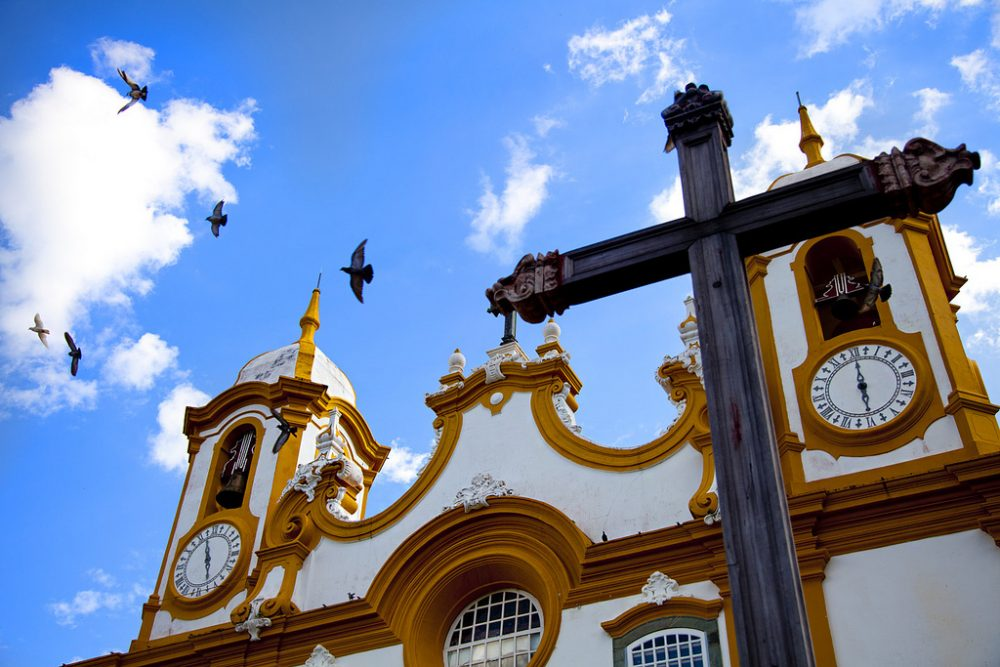
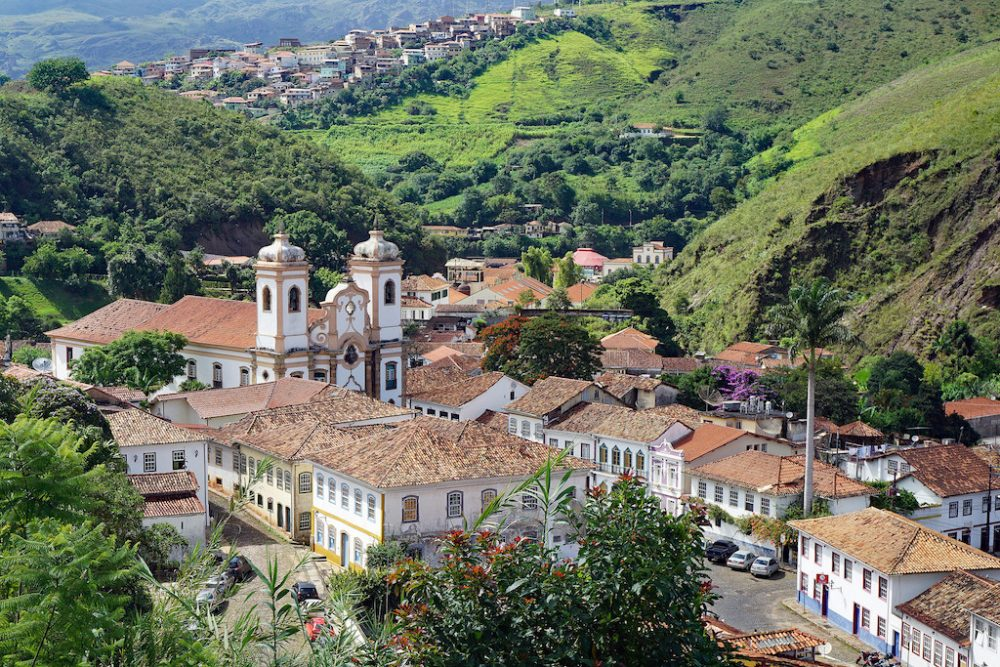
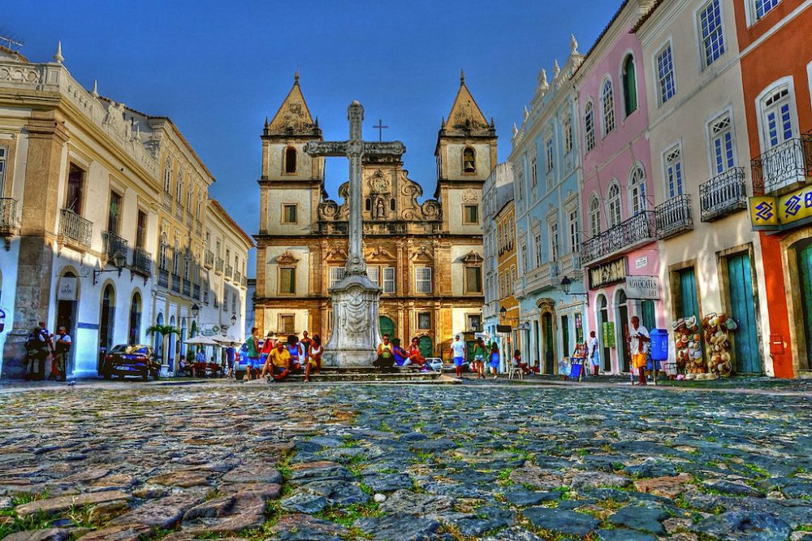
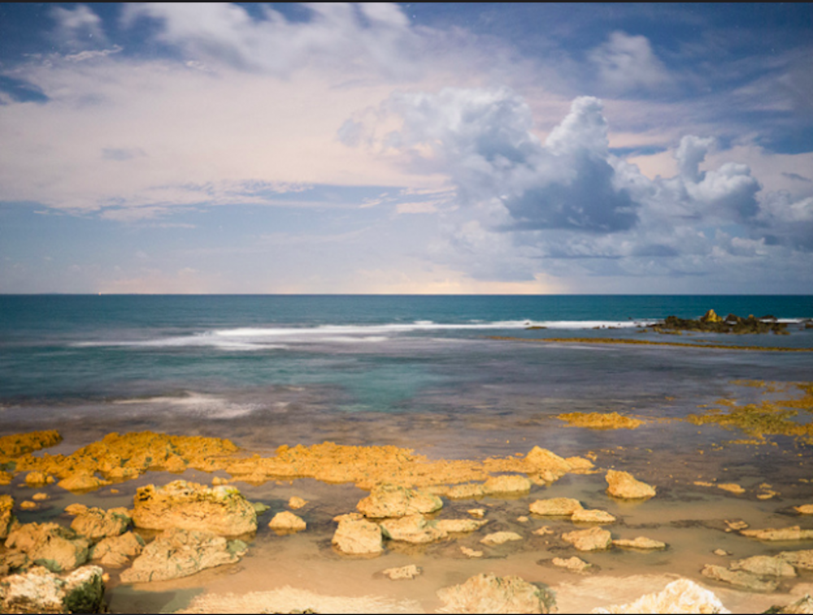

Brazil is a beautiful country offering an invitation to travel that immediately transports you to festivals and wild tropical landscapes. We all know about the Amazon or Rio de Janeiro, its mountains covered with tropical jungle dominated by the famous Corcovado and its famous carnival rich in colours moving with the sound of samba.
An ultimate holiday destination with thousands of kilometres of heavenly beaches and the famous Equatorial Forest, the “giant of Latin America” is huge- 8.5 million square kilometres, or 65 times the size of England! With such an expanse, Brazil offers many unknown spots! We invite you to discover some destinations off the beaten track, emblematic of the wonderful diversity of landscapes and populations that makes all the cultural wealth of Brazil.
In the North of the state of Rio de Janeiro, begins a bucolic and mountainous region rich in colonial heritage and recognized for its tasty cuisine. The state of the “General Mines”, was born from the discovery of important deposits of gold, emeralds and other precious stones in XVI century. This created a real rush of the colonists of the time. This wealth and then the coffee boom “black gold” of the time, explains the opulence of this region of Brazil which is among the most developed today. The enrichment of the cities of Minas Gerais has enabled the construction of splendid churches and other monuments of Baroque Art by renowned architects and sculptors like the famous Aleijadinho.
Ouro Preto is a colonial town in the Serra do Espinhaço mountains of eastern Brazil. The immaculate facades lined with small cobbled streets of Ouro Preto, still today perfectly preserved and classified as World Heritage by UNESCO offer a wonderful immersion into colonial Brazil.
Salvador de Bahia is the first capital of Brazil and the cradle of Afro-Brazilian culture. The so-called “Black Rome” is known for a superb historic centre- the Pelourinho district, where you can admire pastel-coloured buildings dating from the Renaissance period to the modern times. In the cobbled streets, travellers discover the Capoeira, the local martial art, and the batucada orchestras that liven up the neighbourhood every Tuesday evening. This unique architectural and cultural heritage made Pelourinho a UNESCO World Heritage Site in 1990.
At 2 and a half hours of boat south of the capital of Bahia, the paradise of Morro de São Paulo is nestled in a cove of the beautiful island of Tinharé. With its fort dating back to the 17th century, this village has long been an important crossing point for settler and corsair boats along the Brazilian coast. Today these beautiful beaches lined with coconut trees and the unspoilt nature that surrounds it make the success of this ideal destination for a seaside holiday in a dream setting.